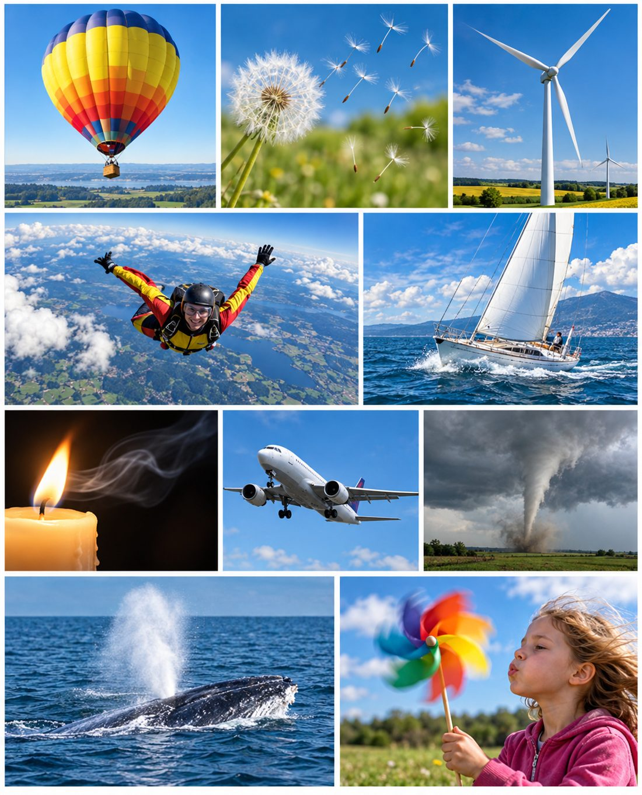
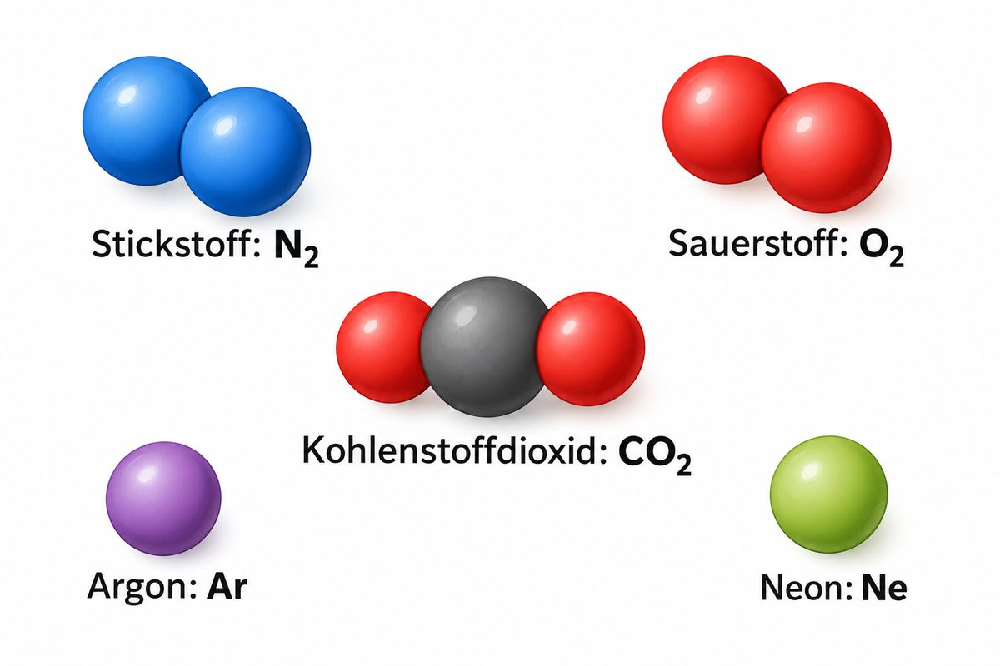
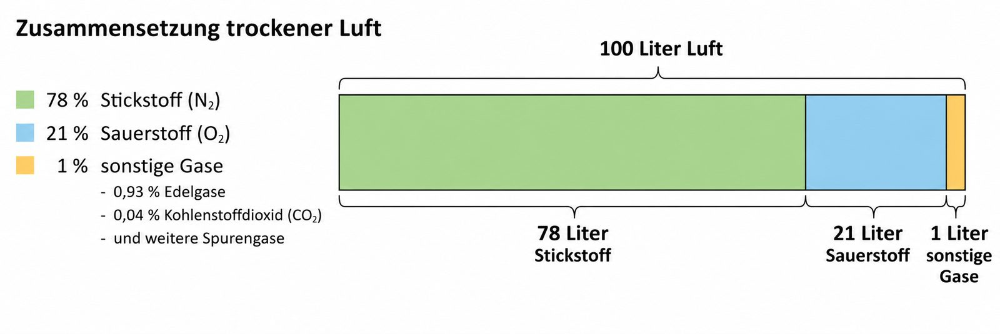
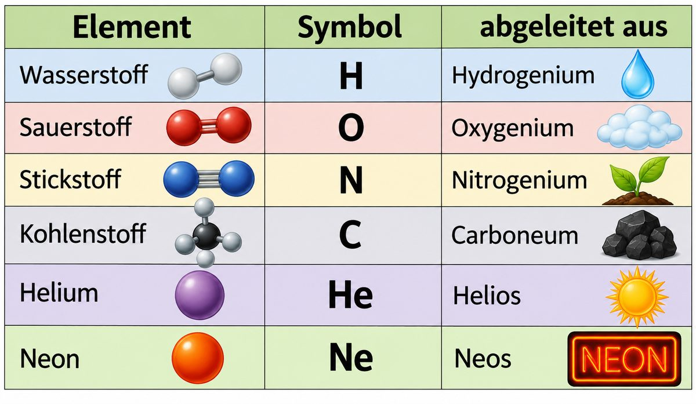
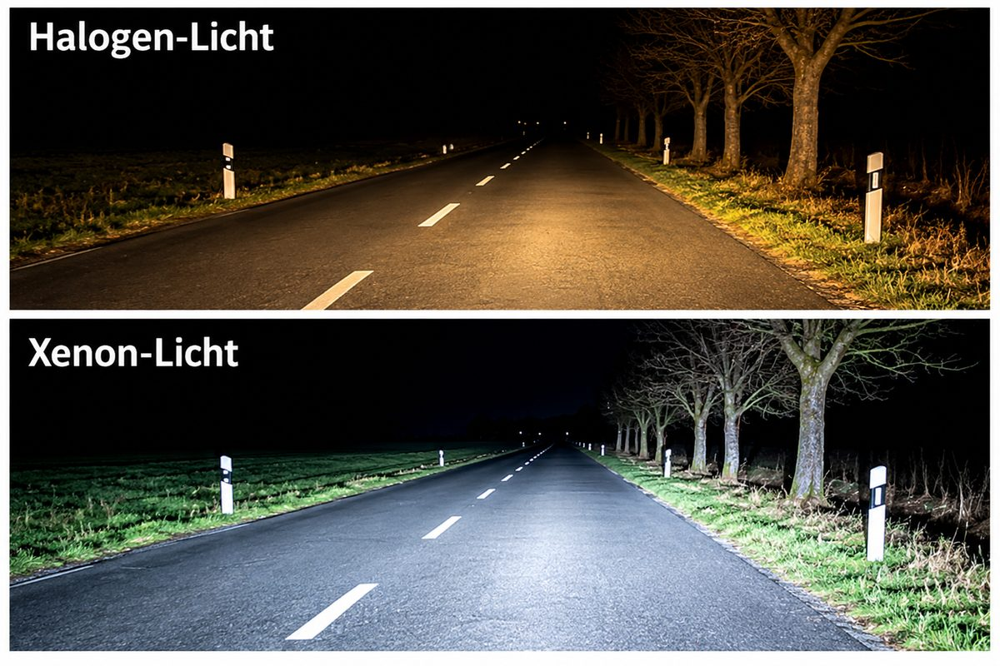
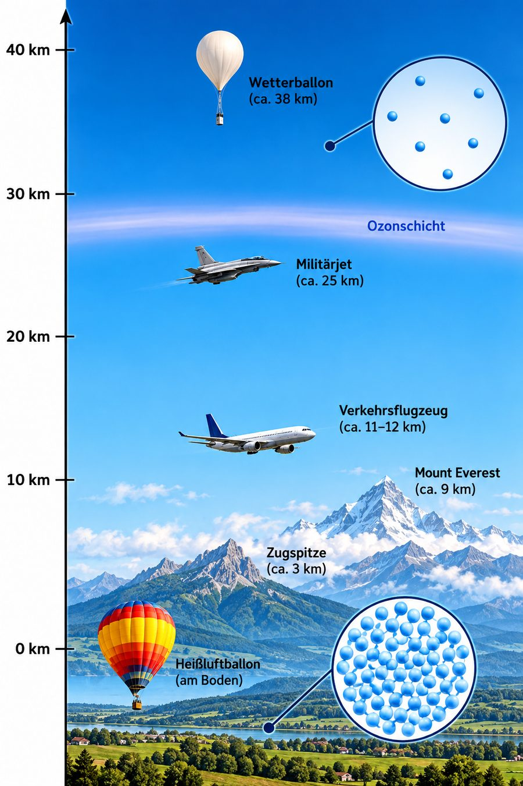
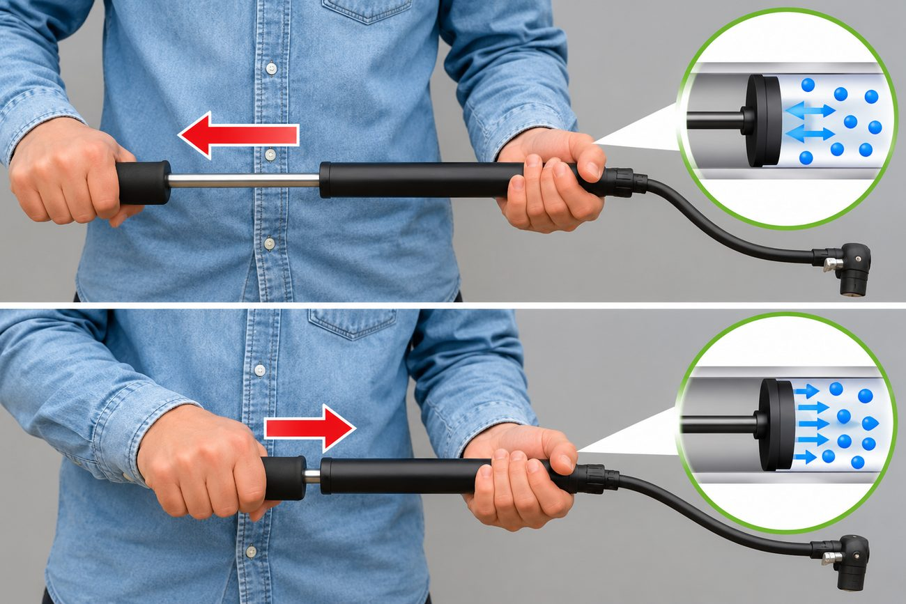
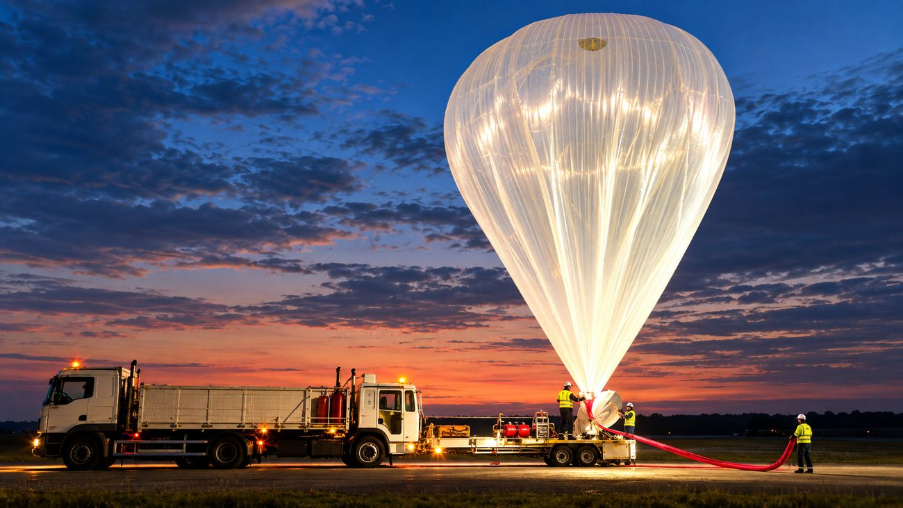

Luft begegnet uns überall
Tippe auf die leuchtenden Punkte. Zu jedem Bild erfährst du, welche Rolle die Luft dort spielt.

Wähle einen Punkt im Bild aus.
0 von 10 entdeckt
Überall steckt Luft dahinter – mal zum Atmen, mal als Antrieb, mal zum Brennen und manchmal sogar als Zerstörer.
Aus dem Buch (S. 12, Aufgabe 3): Schreibe zu jedem Bild einen Satz, der mit „Luft kann …“ oder „Mit Luft kann man …“ beginnt.
Kann man Luft spüren? Luft kann man normalerweise nicht sehen, nicht hören und nicht schmecken. Überlege: In welchen Situationen spürst du sie trotzdem?
Luft – wichtig für Lebewesen
Luft ist . Das weiß jeder, der schon einmal die Luft angehalten hat. Ohne Essen hält ein Mensch einige Wochen durch, ohne Trinken einige Tage – ohne Luft nur wenige Minuten.
Wenn du die Luft anhältst, zwingt dich dein Körper nach kurzer Zeit mit einem sehr starken zum Atmen. Denn beim nimmt dein Körper den aus der Luft auf. Beim Ausatmen gibst du ab. Taucher nehmen deshalb Luft in mit unter Wasser.
Auch alle Tiere brauchen Luft – egal, ob sie an Land, im Wasser oder im Boden leben. Der Wal muss zum Atmen auftauchen. Sogar die im Komposthaufen brauchen Luft, damit sie aus Abfällen wertvolle Gartenerde machen.
Pflanzen brauchen das Kohlenstoffdioxid aus der Luft. Mit Hilfe von Licht stellen sie daraus Nährstoffe und Sauerstoff her (). Eine Pflanze unter einer luftdicht verschlossenen Glasglocke geht ein.
Menschen und Tiere atmen Sauerstoff ein und Kohlenstoffdioxid aus. Pflanzen machen mit Licht daraus wieder Sauerstoff.
Wie lange kannst du den Atem anhalten? Starte die Uhr und halte die Luft an. Tippe auf „Stopp“, sobald du atmen musst.
⚠️ Nur im Sitzen! Sofort wieder atmen, wenn es unangenehm wird.
MERKE
- Ohne Luft können Menschen, Tiere und Pflanzen nicht leben.
- Menschen und Tiere atmen Sauerstoff ein und Kohlenstoffdioxid aus.
- Pflanzen brauchen Kohlenstoffdioxid und stellen mit Licht Sauerstoff her.
Luft in Bewegung
Bewegte Luft nennen wir Wind. Menschen nutzen ihn schon seit mehr als 4000 Jahren: Windmühlen mahlten Getreide, Segelschiffe fuhren über die Meere.
Heute erzeugen elektrische Energie. Der Wind dreht die Rotorblätter, ein macht daraus Strom. Das ist : Es werden keine Rohstoffe verbraucht und es entstehen keine .
Bewegte Luft dient auch zur – etwa bei Computern und Autos. Auch Wäsche trocknet im Wind schneller.
Luft kann aber auch zerstörerisch wirken. Bei über 100 km/h spricht man von einem . erreichen bis zu 300 km/h. Dann werden Dächer abgedeckt und Bäume entwurzelt.
Probiere es im Windpark rechts aus: Schiebe den Regler und beobachte Windrad, Baum und Dach.
MERKE
- Bewegte Luft (Wind) kann genutzt werden: Windräder erzeugen Strom, Luft kühlt Computer und Autos.
- Bewegte Luft kann auch zerstören: Stürme decken Dächer ab und entwurzeln Bäume.
Ohne Luft kein Feuer
Verbrennungsmotoren und Öfen brauchen Luft.
In Heizungen verbrennen Holz, Gas oder Öl und erzeugen dabei Wärme. In Autos, Flugzeugen und Schiffen verbrennen Treibstoffe, um die Fahrzeuge anzutreiben.
In all diesen Fällen ist Luft notwendig – genauer gesagt der in der Luft. Nur mit ihm kann die ablaufen. Deshalb bläst man in die Glut, damit ein Lagerfeuer wieder richtig brennt.
Versuch: Stülpe ein Glas über eine brennende Kerze. Beobachte die Flamme und die Anzeige für den Sauerstoff im Glas.
Die Kerze brennt ruhig. Um sie herum ist genug frische Luft.
Woraus besteht Luft?
Luft ist kein einzelner Stoff, sondern ein . Stell dir vor, du könntest 100 Luftteilchen einfangen:
- 78 davon wären (N₂),
- 21 davon wären (O₂),
- nur 1 Teilchen wäre etwas anderes: vor allem wie Argon, dazu ein winziger Rest (CO₂).
Die kleinsten Teilchen dieser Gase heißen . Sie flitzen ständig durcheinander. Weil zwischen ihnen viel Platz ist, ist Luft .
Tippe auf die Knöpfe unter der Teilchen-Box, um die Gase einzeln hervorzuheben.
100 Teilchen Luft – alle durcheinander.
100 Liter Luft – aufgeteilt


Chemische Zeichen – woher kommen die Buchstaben?

Jeder Grundstoff () hat ein Kurzzeichen aus einem oder zwei Buchstaben. Deshalb heißt Sauerstoff O (von Oxygenium) und Stickstoff N (von Nitrogenium).
Die kleinsten Bausteine der Elemente heißen . Sind mehrere Atome fest miteinander verbunden, entsteht ein . Die zeigt, welche Atome und wie viele davon in einem Molekül stecken:
- N₂: 2 Stickstoff-Atome → Stickstoff
- O₂: 2 Sauerstoff-Atome → Sauerstoff
- CO₂: 1 Kohlenstoff-Atom + 2 Sauerstoff-Atome → Kohlenstoffdioxid
- H₂O: 2 Wasserstoff-Atome + 1 Sauerstoff-Atom → Wasser (als Wasserdampf auch in der Luft)
Die kleine Zahl steht immer hinter dem Symbol, auf das sie sich bezieht. Eine 1 schreibt man nicht.
Ordne jedem Element sein Symbol zu:
Edelgase aus der Luft – im Alltag
Knapp 1 % der Luft sind – vor allem Argon, dazu winzige Mengen Neon, Helium, Krypton und Xenon. Man gewinnt sie aus der Luft. Weil sie kaum mit anderen Stoffen reagieren und in Lampen hell leuchten können, sind sie sehr nützlich:
- Xenon leuchtet in von Autos hell und weißlich.
- Neon leuchtet in Leuchtreklamen rot-orange.
- Argon füllt Glühlampen und den Raum zwischen den Scheiben von Fenstern.
- Helium lässt Ballons und Forschungsballons steigen.
Vergleiche die beiden Fotos: Welches Licht leuchtet die Straße besser aus?

Je höher, desto dünner

Die Luft liegt wie eine riesige Decke um die Erde – die . Unten am Boden drückt die ganze darüber auf die Luft. Deshalb sind die Teilchen dort dicht gepackt. Je höher du steigst, desto weniger Teilchen sind in jedem Liter Luft.
Am Boden: 100 % der Teilchen.
Eigenschaften der Luft
„Leer“ ist gar nicht leer! Mit vier Versuchen zeigst du, dass Luft ein echter Stoff ist. Diese Versuche kommen in der Probe vor.
A · Luft nimmt Raum ein
Ein „leeres“ Becherglas wird mit der Öffnung nach unten in eine Schüssel mit Wasser gedrückt. Oben im Glas klebt ein Taschentuch.
- Schiebe das Glas mit dem Regler nach unten.
- Beobachte: Wird das Taschentuch nass?
- Kippe dann das Glas ein wenig.
Erklärung: Wir sind ständig von Luft umgeben. Ein „leeres“ Glas ist mit Luft gefüllt. Die Luft im Glas verhindert, dass Wasser eindringt. Erst wenn die Luft entweichen kann (Blasen!), fließt Wasser hinein.
→ Luft ist . Sie nimmt einen bestimmten Raum ein (braucht Platz).
B · Luft hat ein Gewicht
Zwei Schüler wiegen einen Fußball mit einer genauen . Dann pumpen sie mit der Ballpumpe möglichst viel Luft hinein und wiegen noch einmal.
Pumpe den Ball mit dem Knopf auf und lies die Waage ab.
Ergebnis: Die Waage zeigt mehr Gewicht an, weil die zusätzliche Luft etwas wiegt.
Luft hat eine (ein Gewicht): 1 Liter Luft wiegt etwa 1,3 Gramm. Zum Vergleich: 1 Liter Wasser wiegt 1000 Gramm.
C · Luft lässt sich zusammendrücken
Nimm eine Fahrradluftpumpe und halte vorne die Öffnung zu. Drücke dann den Griff kräftig nach vorne. Lass den Griff wieder los.
- Schiebe den mit dem Regler hinein.
- Lass los – was passiert?
- Öffne dann die Öffnung und probiere es noch einmal.
Erklärung: Die Luft lässt sich . Die Teilchen rücken enger zusammen. Die zusammengedrückte Luft drückt zurück – der Kolben federt zurück, wenn du loslässt.
Genutzt wird das in Reifen, zum Beispiel von Fahrrädern und Autos: Die Luft darin federt Stöße ab.

Die Öffnung ist zugehalten. In der Pumpe sind 24 Luftteilchen.
D · Warme Luft ist leichter als kühle Luft
Vielleicht hast du schon bemerkt, dass heiße Luft nach oben strömt, zum Beispiel über einer Kerze. Warme Luft ist leichter als kühle Luft, denn durch das Erwärmen dehnt sie sich aus.
Die erhitzte Luft in einem ist viel leichter als die kühlere Luft in der Umgebung. Sie kann deshalb den Ballon und einen Korb mit mehreren Personen tragen.
Schalte den Brenner ein und beobachte Temperatur, Teilchen und Höhe.
Die Luft im Ballon ist so warm wie die Luft draußen. Der Ballon bleibt am Boden.

Der Ballon ohne Brenner
Forschungs- und Wetterballons brauchen keinen Brenner. Sie werden mit dem Gas gefüllt. Helium ist viel leichter als Luft – deshalb steigt der Ballon, genau wie der Heißluftballon, nach oben.
Er fliegt bis in fast 40 km Höhe (schau in die Luftsäule in Station 5). Dort oben ist die Luft sehr dünn. Das Gas im Ballon dehnt sich deshalb immer weiter aus. Darum wird der Ballon beim Start nur zum Teil gefüllt – sonst würde er oben platzen.
MERKE
- Luft ist gasförmig. Sie nimmt einen bestimmten Raum ein.
- Luft hat ein Gewicht: Ein Liter Luft wiegt etwa 1,3 Gramm.
- Warme Luft ist leichter als kühle Luft.
- Luft lässt sich zusammendrücken (z. B. in Reifen).
Training für die Probe
Kreuzworträtsel
Tippe in ein Kästchen und schreibe. Tippst du ein Kästchen zweimal an, wechselt die Richtung. Schwarze Buchstaben sind schon vorgegeben. ß wird als SS geschrieben.
Lösungswort (graue Kästchen):
Vervollständige die Sätze
Tippe zuerst auf eine Lücke, dann auf das passende Wort.
Nutzen oder Schaden? Wofür steht die Luft?
Tippe auf eine Karte und dann auf die passende Gruppe. Am Computer kannst du die Karten auch ziehen.
Welcher Versuch zeigt welche Eigenschaft?
Gase in der Luft, chemisch betrachtet: Für welche Elemente stehen diese Symbole?
Diese Formeln stehen für Moleküle, die auch in der Luft vorkommen. Ordne zu.
Vervollständige den Lückentext
Tippe zuerst auf eine Lücke, dann auf das passende Wort.
Um welche Moleküle handelt es sich hier?
Grau = Kohlenstoff-Atom, rot = Sauerstoff-Atom, weiß = Wasserstoff-Atom. In der Probe können die Modelle auch ohne Farbe gezeichnet sein – dann achte auf die Form und die Größe der Kugeln.
Kreuze an
Erkläre in eigenen Worten ✨ KI prüft
Schreibe ganze Sätze oder Stichpunkte. Die KI achtet nur auf den Inhalt, nicht auf die Rechtschreibung. Danach kannst du die Musterlösung ansehen. So werden die Fragen auch in der Probe gestellt.
Luft-Profi-Check
Wortspeicher
Alle Fachbegriffe dieses Moduls auf einen Blick.